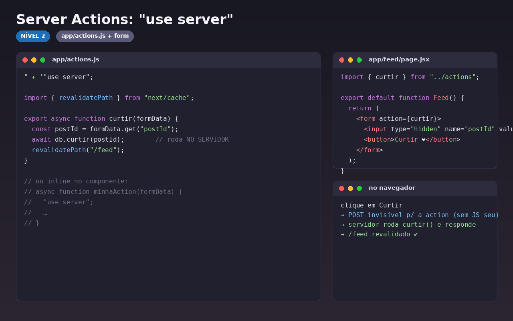

Server Actions: "use server"
A Ana 👩💻 tinha um botão de "curtir" que exigia JavaScript: onClick chamando fetch na mão, tratar loading, tratar erro… Ela trocou tudo por um formulário apontando para uma função do servidor. Zero JS no cliente: o próprio <form action={curtir}> envia os dados para a action, que roda no servidor. Isso é Server Action.
- A diretiva
"use server"no topo de um arquivo de actions <form action={minhaAction}>— form nativo mandando para o servidor- Ler os campos com
formData.get("nome") useActionStatepara receber estado de volta (erros, sucesso)useFormStatuspara o botão "Enviando…" (pending)
A ideia: o garçom que anota o pedido na cozinha, não no celular do cliente
Num site antigo, o cliente (navegador) telefonava para a cozinha (API) ele mesmo, anotava o pedido e atualizava a tela — muito JavaScript, muita chance de erro. Com Server Action, o garçom entrega o pedido direto na cozinha: o formulário HTML nativo faz um POST para uma função que você escreveu no servidor, e a resposta volta como uma nova renderização da página. O navegador nem precisa de JavaScript para isso funcionar.
Os dados do formulário chegam numa estrutura chamada FormData — um "formulário preenchido" que você lê campo a campo com formData.get("nome"), exatamente igual aos campos name="…" dos inputs. E como a action roda no servidor, ela pode tocar no banco de dados, ler cookies, chamar revalidatePath e até dar redirect — tudo sem mandar código nenhum para o cliente.
Há duas formas de declarar: arquivo inteiro de actions (primeira linha "use server", cada função exportada vira uma action) ou inline dentro de um Server Component (a diretiva dentro da função). A primeira é a mais organizada; a segunda serve para actions descartáveis.
Arquivo de actions + formulário que aponta para ela
"use server"; // primeira linha: tudo aqui roda no servidor
import { revalidatePath } from "next/cache";
export async function curtirPost(formData) {
const postId = formData.get("postId");
await db.post.curtir(postId); // toca o banco direto, sem API no meio
revalidatePath("/feed"); // o feed agora mostra o coração cheio
}
import { curtirPost } from "../actions";
export default function Feed({ posts }) {
return (
<ul>
{posts.map((p) => (
<li key={p.id}>
{p.titulo}
<form action={curtirPost}>
<input type="hidden" name="postId" value={p.id} />
<button>❤ {p.curtidas}</button>
</form>
</li>
))}
</ul>
);
}
Repare: o <form action={curtirPost}> recebe a função, não uma string de URL. O Next.js transforma isso num POST seguro para a action. O input hidden leva o postId escondido, como um campo preenchido à mão.
Recebendo estado de volta: useActionState + useFormStatus
Se a action precisa devolver algo (mensagem de erro, sucesso), quem faz a ponte num Client Component é o useActionState (React 19): ele embrulha a action, guarda o estado que ela devolveu e expõe o pending. Já o useFormStatus lê o estado do formulário pai — só funciona dentro de um componente filho do form, e é perfeito para o botão:
"use client";
import { useActionState } from "react";
import { useFormStatus } from "react-dom";
import { enviarMensagem } from "../actions";
function BotaoEnviar() {
const { pending } = useFormStatus(); // true enquanto a action roda
return (
<button disabled={pending}>
{pending ? "Enviando… ⏳" : "Enviar"}
</button>
);
}
export default function ContatoForm() {
const [state, formAction] = useActionState(enviarMensagem, { ok: false, erro: "" });
return (
<form action={formAction}>
<input name="email" placeholder="seu@email" />
<BotaoEnviar />
{state.erro && <small style={{ color: "red" }}>{state.erro}</small>}
{state.ok && <p>Mensagem enviada! 🎉</p>}
</form>
);
}
"use server";
export async function enviarMensagem(estadoAnterior, formData) {
const email = formData.get("email");
if (!email || !email.includes("@")) {
return { ok: false, erro: "E-mail inválido" };
}
await db.mensagem.create({ email });
return { ok: true, erro: "" };
}
| Peça | Onde fica | Para que serve |
|---|---|---|
"use server" (linha 1 do arquivo) | arquivo de actions | marca todas as funções exportadas como Server Actions |
"use server" (dentro da função) | Server Component | action inline, só aquela função |
<form action={fn}> | Server ou Client Component | envia o form para a função do servidor, sem JS |
formData.get("campo") | dentro da action | lê o campo name="campo" do formulário |
useActionState(fn, inicial) | Client Component | chama a action e guarda o estado retornado → [state, formAction, pending] |
useFormStatus() | Client Component filho do form | dá acesso a { pending } do form pai |
Missão: simulando o useActionState: o componente deve guardar o estado devolvido pela "action" e mostrar "Enviado ✔" quando estado.ok for verdadeiro. Complete com useState + função que simula a action, e o botão que chama enviar (dica: o botão usa formAction-style: passe a função direto no onClick).
function App() {
// simula: const [state, formAction] = useActionState(enviar, { ok: false })
const [state, setState] = React.useState({ ok: false });
// 👉 simule a Server Action: devolve { ok: true } depois de "enviar"
function enviar() {
setState({ ok: true });
}
return (
<div style={{ fontFamily: "sans-serif", padding: 16 }}>
<form onSubmit={(e) => { e.preventDefault(); /* 👉 chame a action aqui */ }}>
<button>Enviar (action no servidor)</button>
</form>
{state.ok && <p>Enviado ✔</p>}
</div>
);
}function App() {
const [state, setState] = React.useState({ ok: false });
function enviar() {
// no Next seria: await enviarMensagem(formData) no servidor
setState({ ok: true });
}
return (
<div style={{ fontFamily: "sans-serif", padding: 16 }}>
<form onSubmit={(e) => { e.preventDefault(); enviar(); }}>
<button>Enviar (action no servidor)</button>
</form>
{state.ok && <p>Enviado ✔</p>}
</div>
);
}
<form action={curtirPost}> faz o POST para o servidor sozinho — o navegador não precisa de JS para enviar.Quando dá errado
action — o Next.js só aceita Server Action:Error: Functions cannot be passed directly to Client Components…
<form action={function} …>
Either remove the event handler or mark the function with "use server".
Tradução: funções não podem ser passadas para Client Components a menos que sejam Server Actions. Correção: ou a função vem de um arquivo com "use server" na primeira linha, ou você declara "use server" dentro dela num Server Component. Outro erro comum: chamar formData.get() no lugar errado — dentro da action o 1º argumento é o formData (ou o estado anterior, no caso do useActionState); confundir os dois devolve undefined.
Exercícios
1. O que a diretiva "use server" na primeira linha de um arquivo faz?
2. Como o formulário chama uma Server Action sem JavaScript no cliente?
3. Complete: dentro de uma Server Action, como você lê o valor do campo <input name="titulo">?